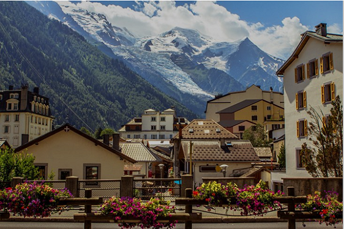
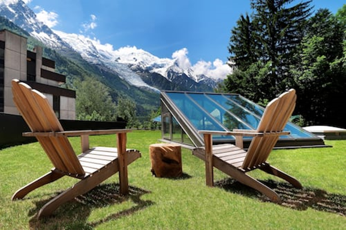
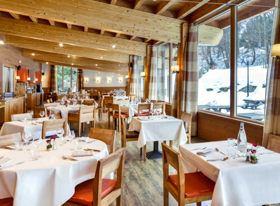
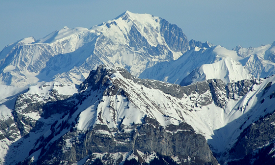
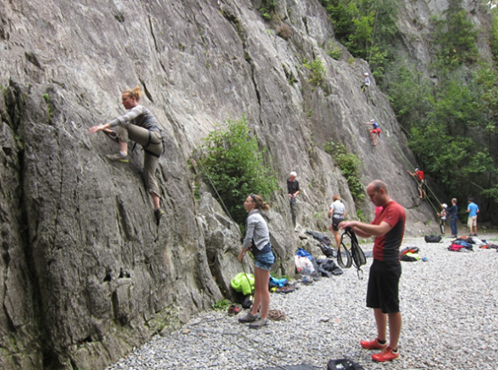

Welcome to ASIC 2022
The 21st Annual Summer Interdisciplinary Conference, held at Chalet Hotel Le Prieuré, 149 Allée Recteur Payot, 74400 Chamonix Mont-Blanc, France.

The conference had talks every afternoon and evening on the six consecutive days, Thursday June 16 to Tuesday June 21, 2022 (the last talks were held the evening of June 21).
Chalet Hotel Le Prieuré has excellent reviews, refurbished rooms with excellent views, two restaurants, and conference facilities; see the hotel website. The meetings, catered breaks, breakfasts, and all but one dinner were held in the hotel — the evening of Sunday, June 19 was left open for attendees to dine at any of the hundreds of local restaurants.
Chamonix
Chamonix sits in the heart of the Alps, adjacent to Mont Blanc, in eastern France near the borders of Italy and Switzerland. The nearest airport is Geneva, a little over an hour by car and two hours by train, though Chamonix is also readily accessible by car, train, and bus from a number of other international airports.
Activities
Chamonix and the surrounding area is one of the world's most scenic destinations and one of the world's capitals for both adventure and leisure sports. Summer activities include hiking, scrambling and peak bagging, via ferrata, mountain and road biking, rock climbing, mountaineering, paragliding, white-water rafting, kayaking, canyoning, glacier walking, and leisure activities such as sightseeing, fishing, tennis, and golf.
Organizer
Richard M. Shiffrin of Indiana University – Bloomington is the organizer (see the Contact tab for all contact info).
About the conference
The subject matter of ASIC conferences is interdisciplinary, with a primary emphasis on a wide variety of scientific domains within the broad frame of cognitive science. ASIC follows the successful format of previous ASIC and AIC conferences: days are free for leisure activities and discussion among participants, talks are in the late afternoon and early evening, followed by dinner. The dates are chosen to make it convenient for attendees to bring family and friends.
Invitation
The conference is open to all interested parties and their family and friends — no invitation is needed to attend. Due to the small number of speaking slots, if too many attendees wish to speak, the organizer adapts talk lengths and/or selects speakers.
Conference format
There is a single speaking session each day (no posters), intentionally organized to maximize the dissimilarity of each day's presentations. The conference began with registration and a reception with drinks and food starting about 15:30 on Thursday, June 16. On subsequent days there were drinks and light snacks starting about 15:40, followed by about seven or eight spoken presentations beginning at 16:00, ending about 20:00 and followed by dinner. The last evening of talks was Tuesday, June 21.
For a listing of all past ASIC sites, see the previous ASIC sites document.
Registration
Registration was made through the Indiana University Conference Bureau, with the fee covering conference-room rental, equipment, and catering for breaks and receptions.
Fee schedule (US dollars)
| Payment window | Fee |
|---|---|
| Prior to January 1, 2022 | $300 |
| January 1 – March 1, 2022 | $350 |
| After March 1, 2022 | $400 |
In addition to the per-attendee registration fee, guest vouchers for others attending receptions and breaks were $25 per guest per day.
Attendees staying at sites other than the conference hotel could take dinner at the conference hotel for 29 euro per person per dinner, paid directly to the hotel.
Lodging
A block of rooms was held at Chalet Hotel Le Prieuré in the center of Chamonix, France.

Lodging, breaks, conference presentations, breakfasts, and all but one dinner were held at the hotel — Sunday, June 19 was left open for attendees to choose dinner among the hundreds of restaurants in Chamonix. The hotel has a variety of room types, A/C, paid on-site parking, free high-speed internet, a bar, two restaurants, a banquet room, and conference facilities. See the hotel website.
Lodging rates
Rates given below are inclusive and include breakfast and dinner, except for June 19 when dinner was open (lodging price reduced by 29 euro per adult that day). Prices include VAT but exclude a tourist tax of 1.5 euro.
| Occupancy | Rate |
|---|---|
| One adult, half board | 140 €/day |
| Two adults in one room, half board (each) | 92.5 €/day |
| Three adults in a triple, half board (each) | 80 €/day |
| Four adults in a quad, half board (each) | 89.5 €/day |
Children under 12 staying in the same room were free.
Reservations
Best reserved by email or telephone; the hotel's ASIC contact was Alicia Duplat, Events.prieure@prieurechamonix.com, +33 (0)4 50 53 20 72.
Cancellation insurance
A special option was offered: for 5% of the booking fee (non-refundable), attendees could cancel at any time up to and during the conference — for example a single room for six days (840 euro) would cost 42 euro to insure.
Cancellation penalties without insurance
- Free until March 11, 2022
- 5% of total booking: March 11 – April 11
- 20% of total booking: April 11 – May 11
- 50% of total booking: May 11 – June 4
- 100%: after June 4
Schedule
Each day began with a reception with refreshments and light food near or in the conference room, starting about 15:30–15:40. Talks ran roughly 16:00–20:00, followed by group dinner at the hotel (except June 19).
Dining & Receptions
Breakfast was included in the daily lodging price.

Buffet breakfast was available 7:00–10:00 AM. Except for Sunday, June 19, a buffet dinner was served in the hotel restaurant when the sessions ended, including vegetarian and vegan choices. On June 19 attendees dined at their choice of restaurants in Chamonix (with the half-board lodging price reduced by 29 euro per adult that day).
Daily receptions
Each day there was a catered reception with drinks and finger food near the conference room prior to the speaking session — about 15:30 on June 16, about 15:40 on subsequent days. The registration fee covered these receptions; guests and family members attending only receptions had a reduced registration fee.
Travel
Chalet Hotel Le Prieuré is at 149 Allée Recteur Payot, 74400 Chamonix, near the center of town.
There are several international airports offering access by rental car, shuttle, train, or bus (estimated times below are for driving; shuttle, bus, or train may require waiting for connections):
- Geneva, Switzerland — about 1.25 hrs
- Lyon and Grenoble, France — about 2.2 hrs
- Milan, Italy — about 2.5 hrs (via the Mont Blanc tunnel)
- Bern, Switzerland — about 3 hrs
The Chamonix bus station is about a five-minute walk to or from the hotel. Local buses run through the valley every 30 minutes and are free with a card given to attendees at the hotel.
Activities
Chamonix is considered by many the adventure capital of the world, with numerous outdoor activities both in the immediate area and within a day's tour and return by 16:00. See chamonix.com for maps and details. Recommended guide service: Mountain Path (Blaise Agresti, +33 (0)6 85 31 21 81), see mountain-path.com.

Hiking
Too many hiking and walking tours to list; see chamonix.com and chamonixallyear.com. Chamonix sits in a valley between the Mont Blanc massif on one side and the Aiguilles Rouges on the other. The cable car ride to the top of the Aiguille du Midi provides access to and views of Mont Blanc and the Mer de Glace; from there, access to some climbs and hikes on the Mer de Glace requires a scary walk down a "knife edge" snow ridge, so many prefer the train to the lower Montenvers site.
Mountaineering
Peaks in the Mont Blanc massif include Mont Blanc (4,810m), Mont Maudit (4,465m), Mont Blanc du Tacul (4,248m), Grandes Jorasses (4,208m), Aiguille Verte (4,122m), Aiguille de Bionnassay (4,066m), Dent du Géant (4,013m), Les Droites (4,000m), Aiguille du Midi (3,843m), and Les Drus (3,754m). These require technical climbing and enough time that attempts are best made before or after the ASIC conference.
Scrambling & peak bagging
Across the valley, the Aiguilles Rouges rise to about 3,000m with peaks accessible by hiking and scrambling.
Rock climbing
Day climbing is available in the Mont Blanc massif — e.g. taking the cable car to the Aiguille du Midi, walking down the knife-edge snow ridge, and climbing the famous Rebuffat route back to the cable car, or the easier but equally spectacular Cosmique Ridge Route (difficulty 4); see chamonixtopo.com. There is a large set of single- and multi-pitch climbing areas both near Chamonix and in the Aiguilles Rouges. As usual, ASIC offered one or two group climbing days at reduced pricing, aimed at all climbers but particularly newcomers — novices taught on easy toprope routes, stronger climbers on more challenging routes in the same area. Indoor climbing is also available for bad-weather days.

Via ferrata
A family-friendly favorite offering high mountain exposure and scenic views without technical climbing skill, attaching to iron cables affixed to the rock faces.
Canyoning
Participants don wetsuits and, with guides, descend a mountain stream in a narrow canyon — no experience required, suitable for families and children.
Parasailing (parapente)
Tandem flights with an expert guide, lifting off from a hillside or cliff, ascending thermals and landing in a field.
Road & mountain biking
The Chamonix area has many opportunities for both forms of biking; see chamonix.com.
White-water rafting
Another favorite activity for families and individuals.
Leisure activities
The area has many leisure activities including golf, tennis, and adventure parks.
Contact
Email is preferred for all correspondence.
Conference organizer
Rich Shiffrin
Indiana University – Bloomington
shiffrin@indiana.edu
Tel: 812-855-4972 · Fax: 812-219-5892
Webmaster / Conference Coordinator
Ruth Eberle
Phone: (812) 856-5722
reberle@indiana.edu
Postal address
Annual Summer Interdisciplinary Conference (ASIC 2022)
c/o Prof. Richard Shiffrin, Psychological and Brain Sciences Department
Indiana University, 1101 E. 10th St., Bloomington, IN 47405